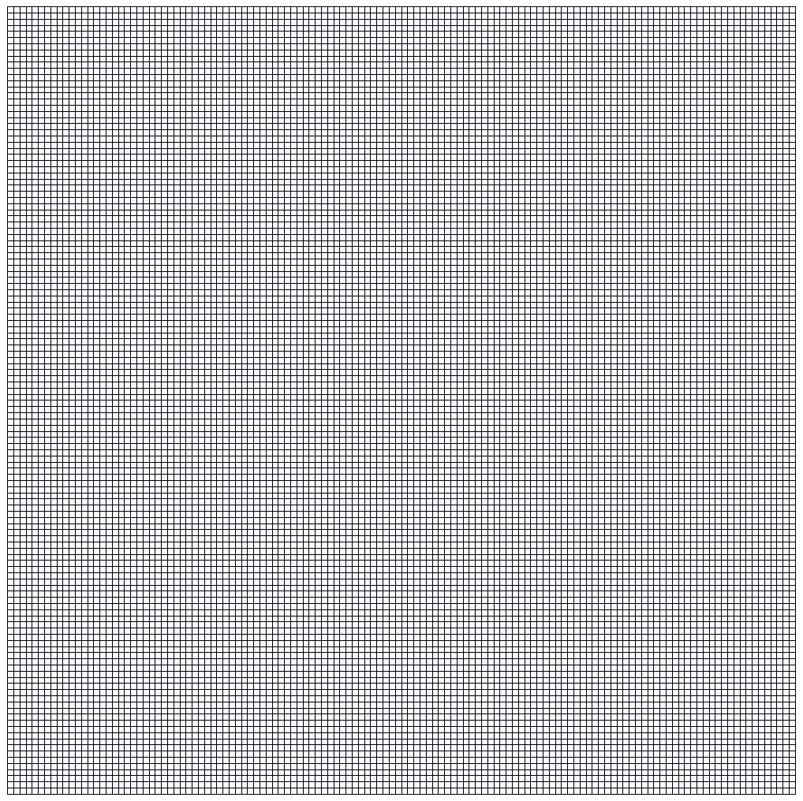
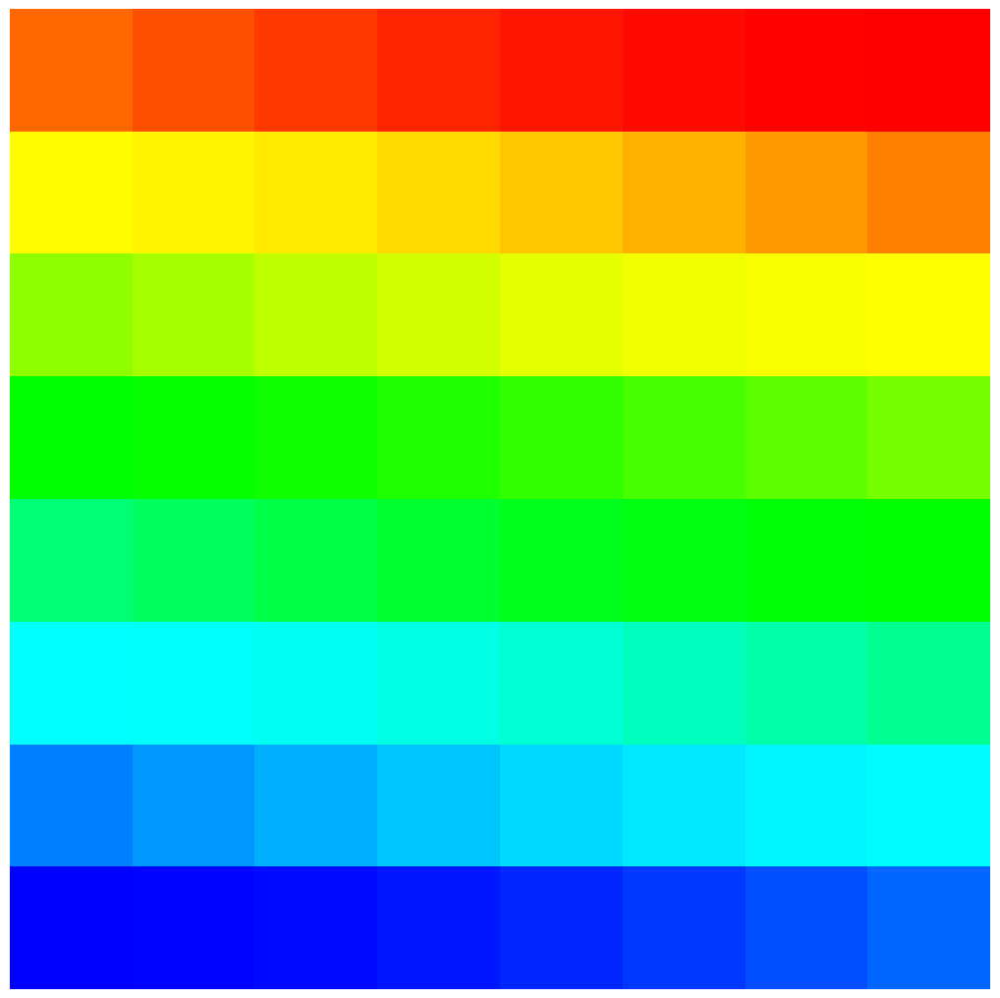
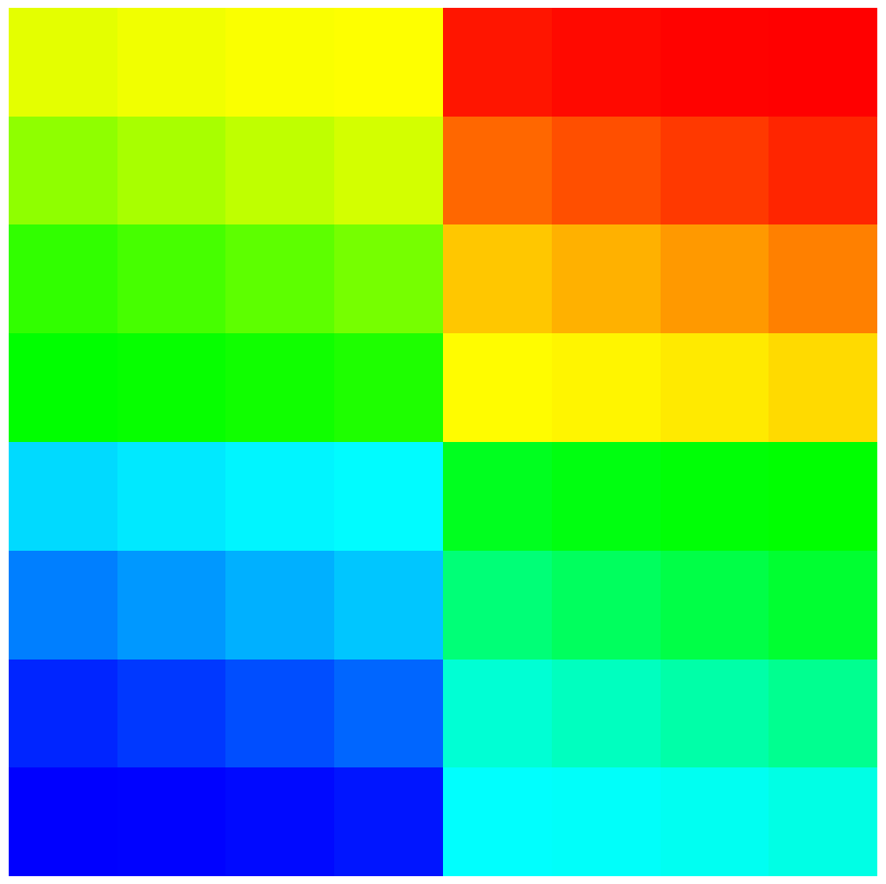

- nodes_grid_computationmanualWhether to determine the compute node grid manually (using nx_nodes, ny_nodes and nz_nodes) or automatically. When using the automatic mode, the user can impose a certain value for nx, ny or nz, and the automatic factorization will adjust the number of processors in the other directions.
Default:manual
C++ Type:MooseEnum
Controllable:No
Description:Whether to determine the compute node grid manually (using nx_nodes, ny_nodes and nz_nodes) or automatically. When using the automatic mode, the user can impose a certain value for nx, ny or nz, and the automatic factorization will adjust the number of processors in the other directions.
- number_nodesNumber of nodes. Used for determining the node grid automatically
C++ Type:unsigned int
Controllable:No
Description:Number of nodes. Used for determining the node grid automatically
- number_procs_per_nodeNumber of processors per node. Used for determining the processor grid on each node automatically
C++ Type:unsigned int
Controllable:No
Description:Number of processors per node. Used for determining the processor grid on each node automatically
- nx_nodesNumber of compute nodes in the X direction
C++ Type:unsigned int
Range:nx_nodes >= 1
Controllable:No
Description:Number of compute nodes in the X direction
- nx_procsNumber of processors in the X direction within each node
C++ Type:unsigned int
Range:nx_procs >= 1
Controllable:No
Description:Number of processors in the X direction within each node
- ny_nodesNumber of compute nodes in the Y direction
C++ Type:unsigned int
Range:ny_nodes >= 1
Controllable:No
Description:Number of compute nodes in the Y direction
- ny_procsNumber of processors in the Y direction within each node
C++ Type:unsigned int
Range:ny_procs >= 1
Controllable:No
Description:Number of processors in the Y direction within each node
- nz_nodesNumber of compute nodes in the Z direction
C++ Type:unsigned int
Range:nz_nodes >= 1
Controllable:No
Description:Number of compute nodes in the Z direction
- nz_procsNumber of processors in the Z direction within each node
C++ Type:unsigned int
Range:nz_procs >= 1
Controllable:No
Description:Number of processors in the Z direction within each node
- processors_grid_computationmanualWhether to determine the processors grid on each node manually (using nx_procs, ny_procs and nz_procs) or automatically. When using the automatic mode, the user can impose a certain value for nx, ny or nz, and the automatic factorization will adjust the number of processors in the other directions.
Default:manual
C++ Type:MooseEnum
Controllable:No
Description:Whether to determine the processors grid on each node manually (using nx_procs, ny_procs and nz_procs) or automatically. When using the automatic mode, the user can impose a certain value for nx, ny or nz, and the automatic factorization will adjust the number of processors in the other directions.
HierarchicalGridPartitioner
Partitions a mesh into sub-partitions for each computational node then into partitions within that node. All partitions are made using a regular grid.
Description
The HierarchicalGridPartitioner is a two-level partitioner similar to GridPartitioner. The idea is to use a coarse grid with the number of computational nodes (nodes in your cluster you are going to use) to first partition the domain. Then use a finer-grained grid within each of those partitions to partition for each processor within the computational node.
This type of scheme minimizes off-node communication, minimizing network communication during large simulations.
Example
An example is the best way to explain what's going on. The mesh in Figure 1 is the mesh we want to partition. It has 128x128 elements in it (16,384 total). We're going to be running on a cluster where we're going to use 4 computational nodes—each of which has 16 processors (64 processors total).
As shown in Figure 2 utilizing GridPartitioner we can get a decent partitioning of this mesh by specifying the partitioning grid to be 8x8.
Now, the "problem" with this partitioning is that it will do quite a bit of off-processor communication. Consider what's on the second node (the third and fourth rows from the bottom). In total there will be 2x128=256 element faces with off-processor neighbors (everything above and below those two rows). In this case that isn't even that bad. If we were using even more processors (say 128) then each node would have a long "strip" of partitions on it where each partition would communicate both above and below it.
To fix this we can use the HierarchicalGridPartitioner using syntax shown in Listing 1. By telling it that we are going to have a 2x2 arrangement of nodes and then a 4x4 arrangement of processors on each node we get Figure 3 showing the processor assignment. Now each node only has 128 element faces with off-processor neighbors. Even better, there are a number of partitions that will not do any off-processor communication at all (the four interior ones in the middle of each node). Even in this small example we've cut the off-processor communication in half by using better partitioning! In a much larger run with larger numbers of processors per computational node (say 36, 40, 64 or even 128 which we'll see soon) this can make an even bigger difference.
Listing 1:
[Mesh<<<{"href": "../../syntax/Mesh/index.html"}>>>]
type = GeneratedMesh
dim = 2
nx = 8
ny = 8
[Partitioner<<<{"href": "../../syntax/Mesh/Partitioner/index.html"}>>>]
type = HierarchicalGridPartitioner
nx_nodes = 2
ny_nodes = 2
nx_procs = 2
ny_procs = 2
[]
[]
Figure 1: Original 128x128 Mesh

Figure 2: Partitioned using GridPartitioner

Figure 3: Partitioned using HierarchicalGridPartitioner
Input Parameters
- control_tagsAdds user-defined labels for accessing object parameters via control logic.
C++ Type:std::vector<std::string>
Controllable:No
Description:Adds user-defined labels for accessing object parameters via control logic.
- enableTrueSet the enabled status of the MooseObject.
Default:True
C++ Type:bool
Controllable:No
Description:Set the enabled status of the MooseObject.